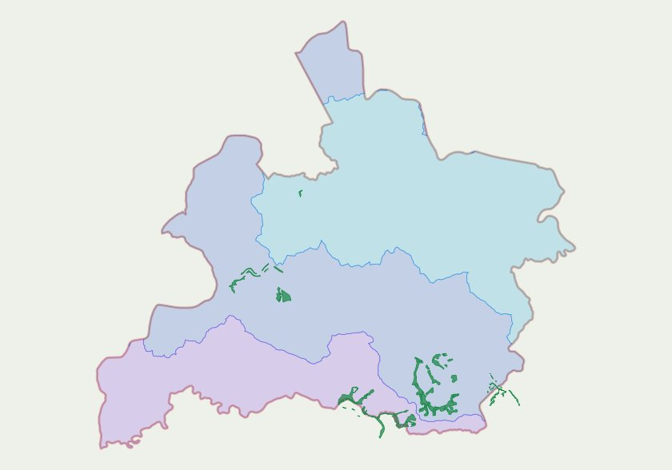
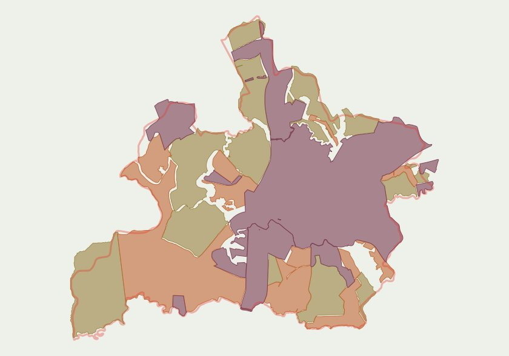

Resíduos da supressão vegetal
Resíduos da supressão vegetal por ano (2020–2024) — análise de compensação ambiental.
 Prefeitura de Jaguariúna
Prefeitura de JaguariúnaUnindo pesquisa ambiental e geoprocessamento em geoportais, mapas e análises que tornam dados territoriais acessíveis.
Mapas temáticos produzidos para diagnóstico ambiental, planejamento e gestão territorial.
Resíduos da supressão vegetal por ano (2020–2024) — análise de compensação ambiental.
Prefeitura de Jaguariúna
Pontos de inundação e alagamento do município, cruzando rede hidrográfica com levantamento de campo.
Prefeitura de Jaguariúna
Alocação de área destinada a um projeto de arborização, com detalhamento de escala local.
Prefeitura de Jaguariúna
Área de conectividade ecológica e zoneamento urbano do município.
Prefeitura de Jaguariúna
Sobreposição entre área de compensação ambiental e Área de Preservação Permanente — Fazenda da Barra.
Prefeitura de JaguariúnaGeoportais e mapas interativos publicados na web, com camadas navegáveis e atualização contínua.

Conservação e recuperação de mananciais: áreas de reflorestamento, biodigestores em propriedades rurais e delimitação das sub-bacias Jaguari, Camanducaia e Atibaia, com registro fotográfico do antes/depois.
Acessar geoportal →Inventário CETESB 2023 — mapeamento interativo e análise de aderência de aterros sanitários.
Acessar geoportal →
Mapa interativo de uso e ocupação do solo do município, com dados de 2023 e camadas complementares.
Acessar geoportal →Análise de impacto de uma estação de transbordo de resíduos: buffer de influência, rota do caminhão, hidrografia, áreas verdes/APP e zoneamento sobreposto à ocupação urbana no entorno.
Acessar geoportal →Infraestrutura de esgotamento sanitário: rede coletora, ligações prediais, poços de visita e elevatórias, cruzados com limites urbanos/rurais, viário e camadas ambientais (APP, hidrografia, inventário florestal).
Acessar geoportal →Cruzamento entre temperatura de superfície (Landsat 9, banda termal) e cobertura de copa arbórea na área urbana, com ferramenta de correlação por polígono desenhado no próprio mapa.
Acessar geoportal →Estudos técnicos que combinam sensoriamento remoto, geoprocessamento e estatística para embasar diagnósticos e decisões ambientais.

Classificação supervisionada de imagens de satélite CBERS-4A (algoritmo ECHO, software MultiSpec) para mapear e quantificar a cobertura arbórea em todo o território municipal e na área urbana consolidada — da obtenção da imagem no INPE ao pré-processamento no QGIS e à validação estatística dos resultados.
Da imagem de satélite bruta à classificação supervisionada: empilhamento de bandas, recorte, pan-sharpening e preparo para o MultiSpec.